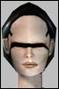

| Author | Thread |
| Cz Registered: Nov 2001
Posts: 1184 |  The Online Manual The Online ManualWe are going to rework the online manual and would like to ask for some help and feedback.
Read the full text, and post your thoughts on the manual.  |
Gogliostro
Leetas
 Registered: Nov 2001
Posts: 76 | Don't you dare change the description of the fixer because you can't make them what you want them to be..
Other than that I would like to see a complete list of game commands..umm..yes..that's about it. |
Intra
Supa Leet
 Registered: Nov 2001
Posts: 599 | one thing that simply has to be in the manual is how to upload mission co-ordinates to your map and compass.
every new character walks around for ages trying to find their first mission because they are not given this information
either that, or make it so the game automatically uploads the co ordinates of the last mission you chose |
Intra
Supa Leet
Registered: Nov 2001
Posts: 599 | another thing....
it needs to be explained to begginers that there are different types of shop (basic/advanced/superior/special/etc)
I remember spending alot of time as a nubi wondering why everything was so expensive, not realising that there was such a thing as a basic shop where I could find low level equiptment.
so something along the lines of 'to find out the type of shop you are about to enter left click on the entrance and you will be told at the top left of your screen- the different types of shop are: yadda yadda' |
Ygglens
Supa Leet
 Registered: Nov 2001
Posts: 107 | I just want you to add to the manual that Homonano is verrry hard to play, so I shouldnt be picked as you first character... Allso, please do not write that NT is the best soloclass... |
Intra
Supa Leet
Registered: Nov 2001
Posts: 599 | hehehe... more from me...
a basic explanation of NCUs aswell.. what they are, what they mean, how to increase your amount of NCU.
I get asked alot by new players what the 0/8 means at the bottom right of their screen is, and I take the time to explain what they are... which leads into saying what a buff is and how many buffs you can have at one time.
basicly.. in a manual... everything that is on the screen needs to be explained and given a reason as to why it is there and what it is used for.
so you would have the entire control panel across the top right explained, what each feature does. The health and nano bars top left and the space for text at the top left along with target HP bar.
the attack/recharge and nano bars
the compass and ping rating, the amount of credits.
the quick key bar and how to open and close it, how to cycle through it, how to add icons to it
etc etc
I could probably write more, but you get the general idea of what I am suggesting
explain everything that can be seen on the screen. which means that really only the game mechanics can be left out |
Darkbane
Council of TestersRegistered: Jan 2002
Posts: 1275 | The information in the manual obviously needs to be brought up to date interms of interface etc. However, I'd suggest more information for new players in the form of short essays on particular topics, maybe one for each class, one for implants, one for missions etc. You could post them to the web site first and get feedback on them before they go into the manual.
Oh, and a basic guide to teams would be rather nice. |
Xeni
Supa Leet
 Registered: Nov 2001
Posts: 201 | Agent stuff quote:
Strong fields
Rifles
Aimed shot (sniping)
Spying
Some trade skills
Weak fields
Health
Close combat
Key skills
Rifle and Sniper Rifle
Aimed Shot
Concealment
Perception
Psychology
Nanos
Damage buff
Damage over time
Profession shift
Root
Concealment buff
Cyan mech eng isnt enough to say we are strong in some tradeskills.
And have close combat ever been the strong field for the agents??
False profesion need a guide on its own, explaining the basics, that some nanos cant be used, and some guidelines and maybe a example on how to use FP soldier or another profesion. There is several nanos around now that agents cant use under FP, need ingame desc on these to avoid confusion(not only the engy/crat pets).
Conceal: Write in description that this is skill connected to sneaking.
Agent can be hard to play as you have (too) many possibilities. Last edited by Xeni on May 30th, 2002 at 12:58 |
Nessiah
Leetas
Registered: Mar 2002
Posts: 4 | The trade skill system needs to be explained. I've been playing this game for 4 months now and I still have no idea how to figure out what components go into building any given device, what order to assemble them in, nor what particular trade-skill they use. All the components just say "This is a trade skill item". They should say what particular trade skill the item is associated with.
quote:
a basic explanation of NCUs aswell.. what they are, what they mean, how to increase your amount of NCU.
I agree with Intra on this one too. NCU's need explantion! |
Wahoo.
Supa Leet
 Registered: Nov 2001
Posts: 698 | this is great news I'll reread the manual and give my 5 cents. |
Anarchin
The original and best
 Registered: Nov 2001
Posts: 135 | Xeni, please keep to profesion ranting out of this thread.
Explain tradeskills better and give examples of what a player can build/assemble.
Explain the OE rules.
(more coming later.) |
Cairo
Leetas
 Registered: Nov 2001
Posts: 25 | A precise explaination of the agg/def slider. What does it do and wich skills it has influence on. EG is there any effect from your evades when you are at 100% agg.
Better explanation of MA fists, would be awesome if you could compare fist against other weapons. |
Ayvalen
Leetas
 Registered: Apr 2002
Posts: 68 | There should be some sort of explination in regards to tradeskills and picking a class to dabble in these skills. Unfortunately as things are now, a trader is the best choice for this. The engineer as a tradeskill class is a joke really, since most tradeskills have to be insanely high to actually be used, and this can only be done through trader buffs and traders having most of the same green skills.
Also, any referance to pistols as primary weapons other than for the buffs they have should be removed. A lot of people who first start the game pick up pistols as their weapons because they might have them as a light blue skill when all their others are dark blue, or they don't pick one weapon but waste IP on several different types not realizing they wont have enough IP to go around in a few levels. A lot of work could be done on helping a player select a weapon to go with their class and do a good amount of damage, but then knowing FunCom when people started using their suggestions they'd nerf those weapons. |
| Cz Registered: Nov 2001
Posts: 1184 |  Great input folks Great input folks/me takes lots'a notes  Xeni
Xeni, all the profession descriptions will be checked and probably rewritten, or maybe even removed (as we don't want to put a cookie cutter on how people develop their characters) and replaced by general tips and a link to the profession forums.
Agents also have cyan Chemistry and green Psychology. Not the most utilized trade skills, but that was something we couldn't predict when those descriptions were made.
I'll try get a subchapter of its own on the profession shifting for the Agents. 
---
I'll be reading and taking more notes tomorrow, so keep the feedback coming. |
Ghump
Soleet
 Registered: Mar 2002
Posts: 168 | What to do first I would like a "Total beginners guide to AO"
Something that really grabs You by the hand and leads You through the first hour of play. Something in the likes of
On your screen You see bla bla... Let's try that out.
In Your inventory You have a nanocrystal. What's that? How do You upload it. How to buff yourself with that nano. How to kill Your first mob - and survive it!
Use BIG pictures!
/Ghump |
Hotpie
Soleet
 Registered: Nov 2001
Posts: 14 | Where can I find the current online manual? I want to look up the fixer description, I need a good laugh, the ones I've had lately are all gallows humor... |
lauriel
Eleet
 Registered: Jan 2002
Posts: 2 | City Maps How about adding maps for the startup cities...and have at least the following marked or listed (with coordinates??):
All the Basic Shops
Whompa locations
Then you can list, under something like "Other Points of Interest", some other places in the city (kinda like a tourist guide) without any location information. Encourage exploring by saying something like "Please explore the city and visit these places, and many more exciting venues and shops."
On a side-note, how about publishing a book of blank maps that people can fill in as they explore. Playfields with only topological features, and cities with the major buildings on them. Enough to orient people, so that when they are exploring in-game they can make notes about where they've been, etc. |
Hotpie
Soleet
Registered: Nov 2001
Posts: 14 | Disregard, found it, and more gallows humor to go along with it. O, you poor deluded souls, abandon all hope, ye who choose Fixer as profession. |
Arila
Phear Leet
 Registered: Jan 2002
Posts: 335 | More story stuff.
All the copies of the manual, but the english have info about the main characters and such. I dont understand french that well :/
Add a few pages with background info on Sol Banking/The ICC and other factions as well would be cool |
Amanite
Soleet
 Registered: Nov 2001
Posts: 66 | Mission creation missions You should maybe explain that you forgot to implement player-created-missions and that the "create mission" button doesn't work.
Amanite |
All times are GMT.


 Last Thread Next Thread
Last Thread Next Thread 
 May 30th, 2002 11:54
May 30th, 2002 11:54